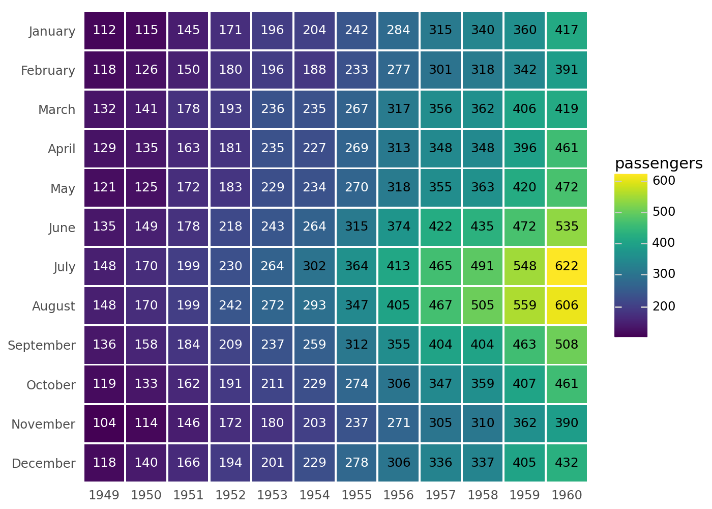
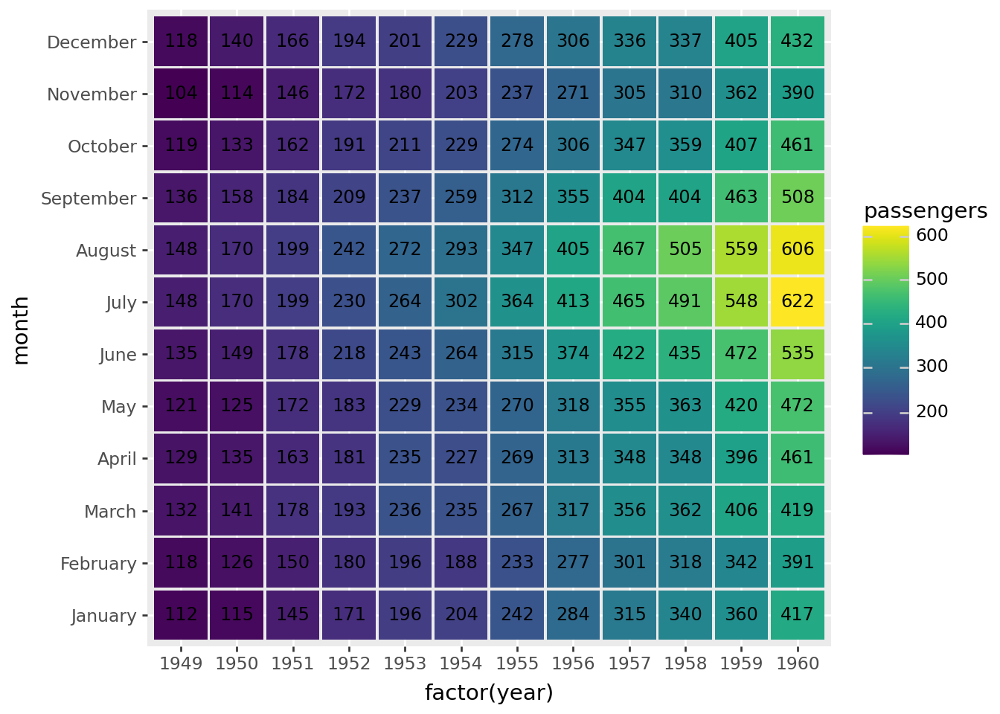
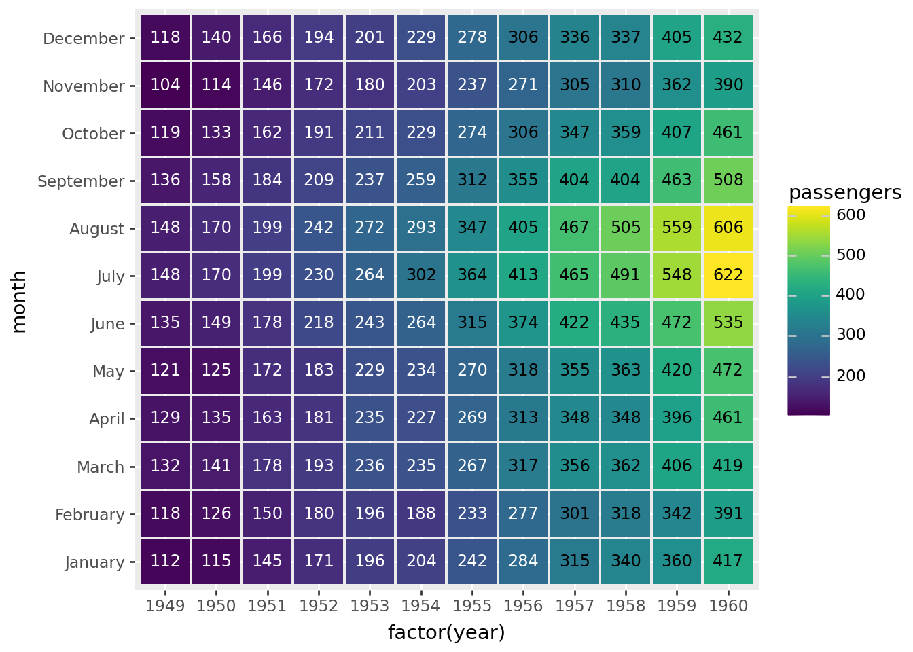
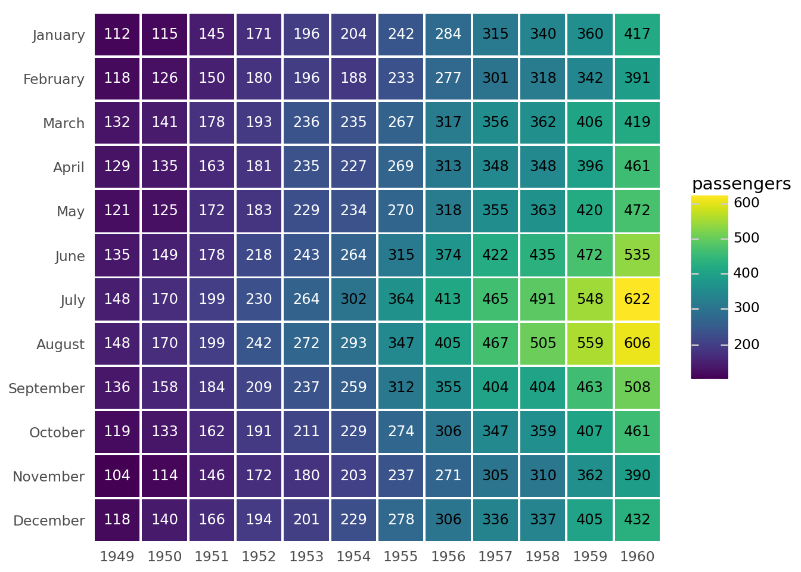

import pandas as pd
import numpy as np
from plotnine import (
ggplot,
aes,
geom_tile,
geom_text,
scale_y_reverse,
scale_y_discrete,
scale_fill_brewer,
scale_color_manual,
coord_equal,
theme,
theme_void,
element_blank,
element_rect,
element_text,
)Annotated Heatmap
heatmap
text

Conditinous data recorded at discrete time intervals over many cycles
Read data
flights = pd.read_csv("data/flights.csv")
months = flights["month"].unique() # Months ordered January, ..., December
flights["month"] = pd.Categorical(flights["month"], categories=months)
flights.head()| year | month | passengers | |
|---|---|---|---|
| 0 | 1949 | January | 112 |
| 1 | 1949 | February | 118 |
| 2 | 1949 | March | 132 |
| 3 | 1949 | April | 129 |
| 4 | 1949 | May | 121 |
# We use 'factor(year)' -- a discrete -- instead of 'year' so that all the years
# are displayed along the x-axis.
# The .95s create spacing between the tiles.
(
ggplot(flights, aes("factor(year)", "month", fill="passengers"))
+ geom_tile(aes(width=0.95, height=0.95))
+ geom_text(aes(label="passengers"), size=9)
)
That looks like what we want, but it could do with a few tweaks. First the contrast between the tiles and the text is not good for the lower passenger numbers. We use pd.cut to partition the number of passengers into two discrete groups.
flights["p_group"] = pd.cut(
flights["passengers"], (0, 300, 1000), labels=("low", "high")
)
flights.head()| year | month | passengers | p_group | |
|---|---|---|---|---|
| 0 | 1949 | January | 112 | low |
| 1 | 1949 | February | 118 | low |
| 2 | 1949 | March | 132 | low |
| 3 | 1949 | April | 129 | low |
| 4 | 1949 | May | 121 | low |
(
ggplot(flights, aes("factor(year)", "month", fill="passengers"))
+ geom_tile(aes(width=0.95, height=0.95))
+ geom_text(aes(label="passengers", color="p_group"), size=9, show_legend=False) # modified
+ scale_color_manual(["white", "black"]) # new
)
Last tweaks, put January at the top and remove the axis titles, axis ticks and plot background.
(
ggplot(flights, aes("factor(year)", "month", fill="passengers"))
+ geom_tile(aes(width=0.95, height=0.95))
+ geom_text(aes(label="passengers", color="p_group"), size=9, show_legend=False)
+ scale_color_manual(["white", "black"]) # new
+ scale_y_discrete(limits=months[::-1]) # new
+ theme( # new
axis_title=element_blank(),
axis_ticks=element_blank(),
panel_background=element_rect(fill="white"),
)
)
You can get similar results if you replace
+ geom_tile(aes(width=.95, height=.95))
+ geom_text(aes(label='passengers', color='p_group'), size=9, show_legend=False)with
+ geom_label(aes(label='passengers', color='p_group'), size=9, show_legend=False)Credit: This example is a recreation of this seaborn example.